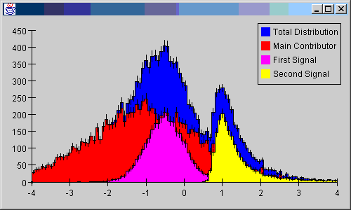

The following example shows how to display root histograms using the JAS plot widget. You will need both root.jar and jas.jar (part of the JAS distribution) in your CLASSPATH to compile and run this, plus the Example.root data file. The essential class is the RootHistogramAdapter which takes a Root histogram (TH1) and converts it to a JAS DataSource, which can be displayed by the JAS Plot widget. The RootHistogramAdapter is quite crude at the moment, it only works for simple 1D and 2D plots, and ignores attributes such as line color, markers, date axis etc. (It should be easy to improve it, volunteers are welcome).
import hep.io.root.*;
import hep.io.root.interfaces.*;
import java.io.IOException;
import jas.hist.*;
import jasext.root.RootHistogramAdapter;
import javax.swing.*;
import java.awt.BorderLayout;
/**
* An example of using the JASHist widget with Root Histograms
* @author tonyj@slac.stanford.edu
*/
public class RootWithJAS extends JPanel
{
/** Creates new RootWithJas */
private RootWithJAS() throws IOException
{
RootFileReader rfr = new RootFileReader("Example.root");
TH1 main = (TH1) rfr.getKey("mainHistogram").getObject();
TH1 total = (TH1) rfr.getKey("totalHistogram").getObject();
TH1 s1 = (TH1) rfr.getKey("s1Histogram").getObject();
TH1 s2 = (TH1) rfr.getKey("s2Histogram").getObject();
JASHist plot = new JASHist();
plot.addData(RootHistogramAdapter.create(total)).show(true);
plot.addData(RootHistogramAdapter.create(main)).show(true);
plot.addData(RootHistogramAdapter.create(s1)).show(true);
plot.addData(RootHistogramAdapter.create(s2)).show(true);
setLayout(new BorderLayout());
add(plot);
}
public static void main (String args[]) throws IOException
{
JFrame f = new JFrame();
f.setDefaultCloseOperation(f.EXIT_ON_CLOSE);
f.setContentPane(new RootWithJAS());
f.setSize(500,300);
f.show();
}
}
Running the program will produce something like this:

This code can easily be extended to create a Root Histogram Browser.